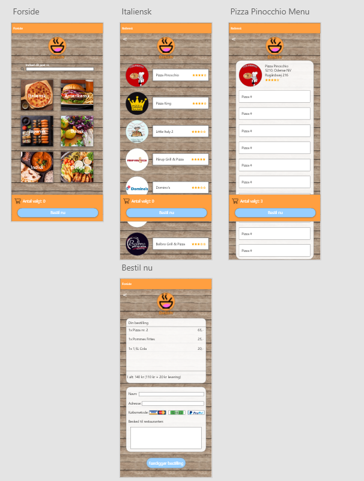
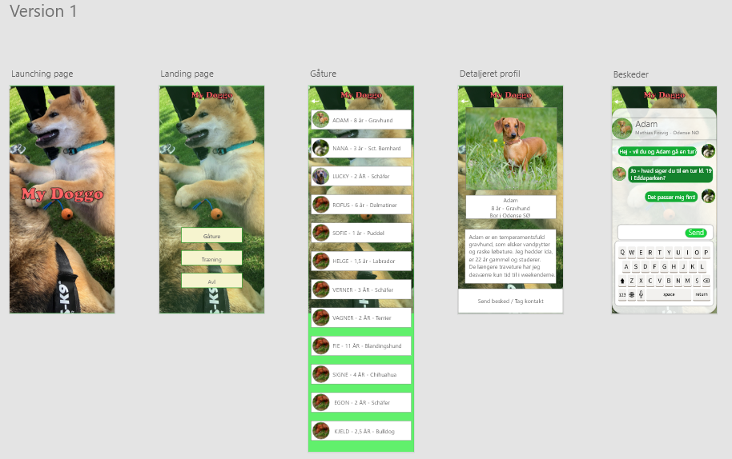
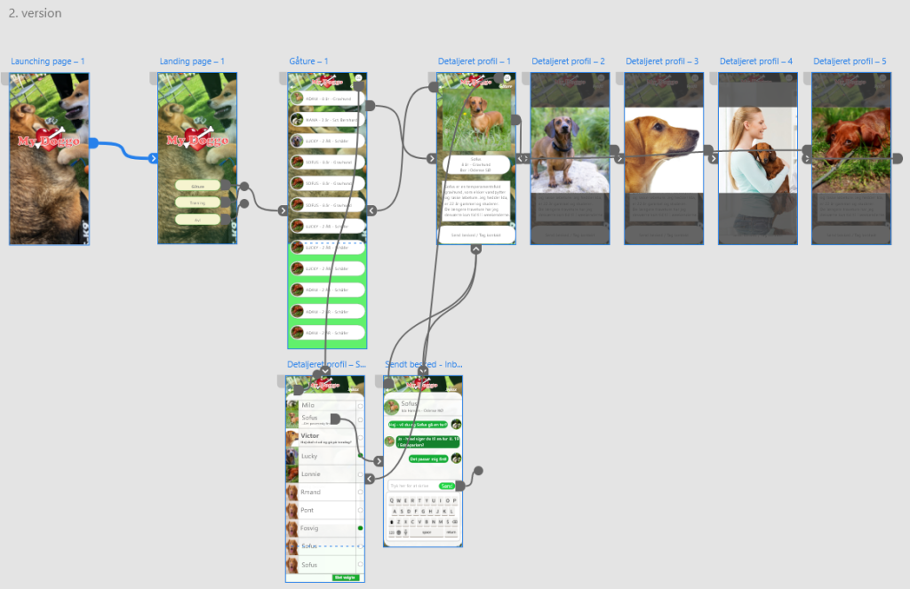
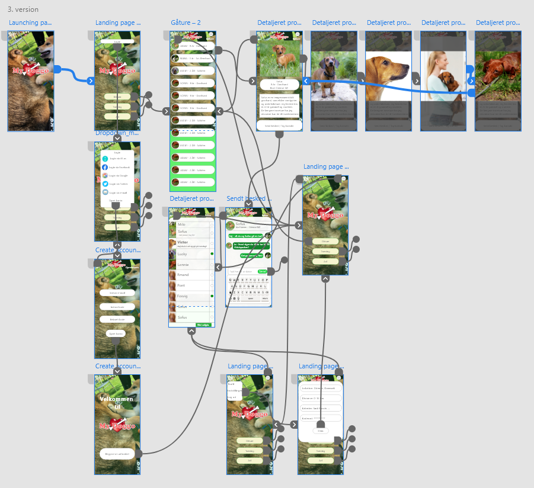

Design af mobil apps
Jeg har i disse projekter arbejdet med at designe mobile apps, heraf en “Food App Experience” hvilket består af en mad app ligesom diverse mad distributører såsom Just Eat, Hungry, Wolt osv. Produktet har jeg lavet i Adobe XD, og en dating app for hunde.

Jeg har under oprettelsen af appen haft design, farver og brugervenlighed som grundlag og overvejelser, for at danne det bedste mulige design af appen. Disse valg føler jeg ville dække mine mest basale behov for en mad distributions app. Appen er hovedsageligt opstillet i Adobe XD, men der er også brugt Photoshop til design af logoet samt navnet af appen. Derudover, er alle elementer designet i Adobe XD selv og den fulde prototype kan ses nedenfor:

Dating appen for hunde lavede vi i grupper, dog stod jeg for en stor del af designet af selve appen. Princippet bag dating appen, er at man som ejer skal kunne finde gåture osv. for sin hund med andre ejeres hunde. Derudover skulle det foregå som et slags forum af en art, og ikke ligesom de traditionelle dating apps, såsom tinder osv. som kan ses nedenunder:
Dette var en mere idybdegående app, da der blev anvendt feedback gennem 3 forskellige versioner, hvor vi på baggrund af feedbacken kunne forbedre vores app hver gang. Efter første omgang feedback gik vi i gang med en version 2 af vores dating app. I denne version fik vi gået lidt mere i detaljer og rettet os til feedbacken af vores brugere. Kanterne blev rundet og der blev integreret flere billeder til profilen, samt en inbox. Der blev derudover også lavet et logo som ville gøre appen mere let genkendelig.
I tredje og sidste version af appen fik vi finpudset det sidste og tilføjet en login side, hvori man kan oprette sig og skifte diverse indstillinger, med formål om at gøre appen mere realistisk.
